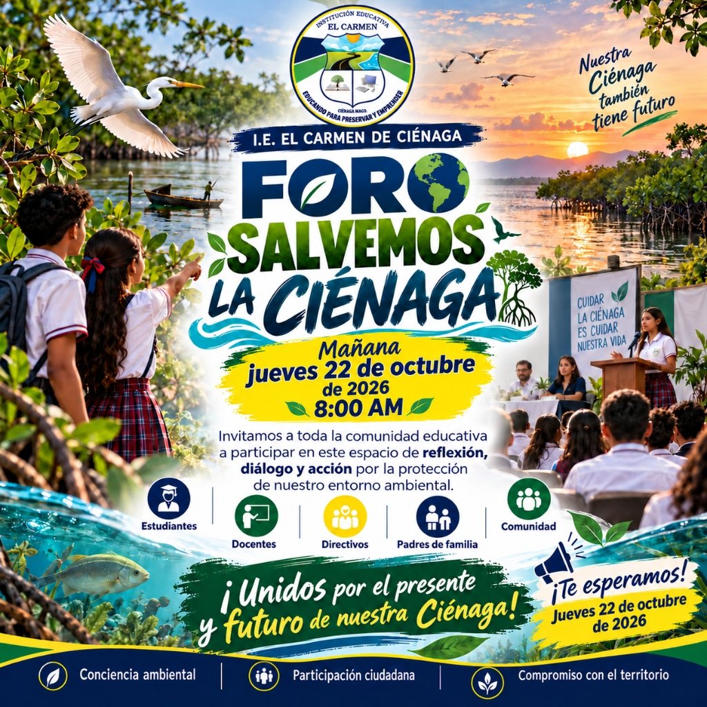
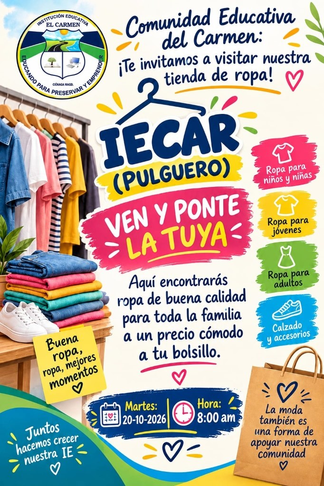
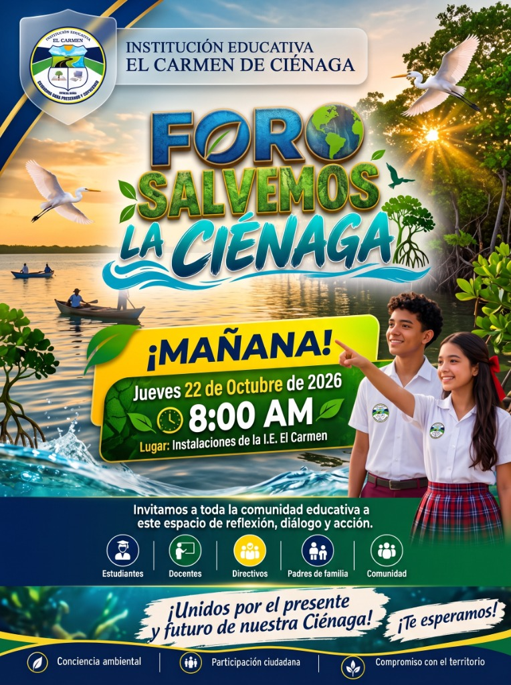

.jpg)
Cierre con gratitud y memoria
La Santa Misa del viernes 23 de octubre cerró nuestra Semana Cultural y conmemoró el aniversario institucional.
Explorar memoria →«¡Gracias por vivir juntos nuestra cultura!»
Cinco días inolvidables de tradición, ciencia, deporte y celebración comunitaria en la Institución Educativa El Carmen de Ciénaga, Magdalena.
Celebramos nuestra historia. Conservamos nuestras memorias.

Memoria carmelista · 19—23 octubre de 2026
La Semana Cultural 2026 culminó con éxito el viernes 23 de octubre con la Santa Misa. Celebramos 53 años de historia, agradecimos el camino compartido y honramos la memoria de nuestro compañero Arlin Jiménez.
5jornadas para recordar
53años de historia
1comunidad carmelista
Gracias a estudiantes, familias, docentes, directivos y a quienes hicieron posible este encuentro de historia, emprendimiento, deporte, ciencia y fe.
Revive los encuentros y descubre lo que sigue para nuestra comunidad.
La Santa Misa del viernes 23 de octubre cerró nuestra Semana Cultural y conmemoró el aniversario institucional.
Explorar memoria →
Memoria del Foro Salvemos la Ciénaga y del Día de la Ciencia de la sede Guillermo F. Morán.
Explorar memoria →
Consulta la programación publicada del Mundialito Carmelista y revive su desfile inaugural.
Explorar memoria →Memoria de Ciénaga y regiones
Martes 20Jóvenes con propósito & Pulguero
Miércoles 21Desfile e inauguración deportiva
Jueves 22Foro ambiental y comunitario
Viernes 23Gala y memoria de Arlin Jiménez
Cada jornada cobra vida en el patio central techado, las canchas y los pasillos de nuestra sede principal en el Barrio Micael Cotes.

«Conoce nuestro patrimonio, nuestras raíces y nuestra identidad cultural». Los estudiantes exponen sobre la riqueza arquitectónica, cultural y ecológica de Ciénaga y la Ciénaga Grande de Santa Marta.
«Ideas que inspiran, proyectos que transforman». Los estudiantes presentan iniciativas productivas creativas, acompañados de la tienda escolar benéfica «IECAR (Pulguero): Ven y ponte la tuya» con ropa y calzado de calidad para toda la familia.

Jóvenes con propósito

Ven y ponte la tuya
«Integración · Respeto · Juego Limpio». Las delegaciones estudiantiles lucen los trajes deportivos de sus países asignados, acompañadas de comparsas y la banda de paz. Gran desfile por las calles de Ciénaga rumbo a la Cancha Brisas del Mar para los solemnes actos protocolarios y los encuentros inaugurales simultáneos.

«Nuestra Ciénaga también tiene futuro». Un espacio pedagógico y de liderazgo comunitario convocado por la IE El Carmen para reflexionar, dialogar y proponer acciones urgentes por la protección y rescate de nuestro entorno ambiental y la Ciénaga Grande de Santa Marta.
Fundada en 1973, la Institución Educativa El Carmen conmemora 53 años formando generaciones en Ciénaga. Por la mañana, gala solemne con izada de bandera y distinciones en el patio techado; por la tarde, Solemne Santa Misa en la sede principal agradeciendo las bendiciones y honrando con profundo afecto la memoria de nuestro querido compañero Arlin Jiménez en el primer año de su partida.

Consulta los horarios exactos, actividades y ubicaciones de cada jornada de nuestra Semana Cultural.
Conoce nuestro patrimonio, nuestras raíces y nuestra identidad cultural con exposiciones temáticas y testimonios orales.
Presentación de artesanías, maquetas históricas y muestras fotográficas preparadas por estudiantes de básica y media.
Ingreso y preparación de puestos de exhibición para los estudiantes y equipos con proyectos de emprendimiento inscritos.
Inicio de Actividades Protocolarias: Hora oficial de llegada para toda la comunidad estudiantil. Requisito institucional: asistir con uniforme y sin libros.
«Ideas que inspiran, proyectos que transforman». Apertura oficial de la muestra comercial y creativa de los estudiantes carmelitas.
Venta benéfica de ropa de excelente calidad y calzado para toda la familia a precios muy cómodos. ¡Apoyemos a nuestra institución!
Cierre de la jornada. Compromiso ambiental y cívico: cada stand asignado debe entregarse completamente aseado y ordenado.
Encuentro de estudiantes, docentes y directores de grupo en las instalaciones del Colegio El Carmen para organizar las delegaciones, comparsas y bandas de paz por países asignados.
Inicio puntual del desfile hacia la Cancha Brisas del Mar para evitar la exposición prolongada al sol. Recorrido con banda de paz, comparsas y acompañamiento de entidades viales.
Llegada e ingreso de las delegaciones al espacio de abanicos en la Cancha Brisas del Mar, dejando libre el área central para las muestras folclóricas y actos protocolares.
Himnos Oficiales: Himno Nacional de Colombia, Himno de Ciénaga e Himno de la IE El
Carmen.
Oración: A cargo del docente José Julio (Capellán institucional).
Apertura Oficial: Palabras del Rector Ricardo Medina, coordinador Daniel Cera y docente
Samir Sandoval.
Juramento Deportivo: A cargo de estudiante destacado en el ámbito deportivo.
Muestras Culturales: Presentaciones folclóricas de danza y canto.
Fútbol de Salón: Emocionante clásico inaugural entre Docentes vs. Estudiantes.
Voleibol Femenino: Encuentro inaugural en simultáneo (Soccer Passion vs. IE El Carmen).
Culminación de los actos inaugurales y partidos de exhibición. Despedida ordenada de los estudiantes hacia sus hogares.
A partir del lunes 26 de octubre se reanudan los partidos oficiales por categorías en la Cancha del Colegio El Carmen: Tetero (2A vs 2B), Preinfantil (3A vs 3B), Infantil (Grupo único: 4A, 4B, 4C, 5A, 5B), Prejuvenil (8 equipos en Grupos A y B) y Juvenil (7 equipos en Grupos A y B). Jornada de grandes finales: 6 de noviembre.
Espacio de diálogo, ponencias estudiantiles, debate pedagógico y compromiso comunitario convocado por la IE El Carmen para impulsar la defensa, conservación y restauración de nuestro ecosistema de manglares y la Ciénaga Grande de Santa Marta.
Celebración solemne de los 53 años de fundación institucional (1973 - 2026). Izada de bandera especial, serenata conmemorativa, distinciones al mérito docente y entrega de reconocimientos al talento y disciplina de nuestros estudiantes.
Eucaristía de acción de gracias por un año más de vida institucional y en conmemoración del primer aniversario de la partida de nuestro querido compañero y educador Arlin Jiménez. Unámonos en oración comunitaria para honrar su recuerdo y dar gracias por su legado en la familia Carmelista.
Explora las memorias de las cinco jornadas: fotografías, videos y álbumes oficiales que conservan lo vivido por nuestra comunidad.
Establecimiento educativo oficial de Ciénaga, Magdalena, fundado en 1973. Formando a niños, niñas y jóvenes con sentido de comunidad y espíritu emprendedor.
¿Deseas comunicarte con nuestra institución o compartir tus recuerdos de la Semana Cultural?
Escribir a: ieelcarmen@semcienaga.gov.co ✉.jpg)